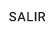

1.Debe hacer click en el botón de la pantalla
principal.
2. Una vez en la ventana de Pedido a Proveedor, debe agregar aquellos artículos de
proveedor que desea pedir.
Topic: Puede corroborar los datos de los proveedores en las diferentes solapas.
En caso de querer abadonar el pedido en cualquier momento, debe hacer clic en el
botón .
4.Una vez agregados los artículos de proveedor, puede guardar el/los pedidos que se
generarán a partir de los artículos seleccionados con el botón .